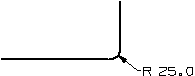
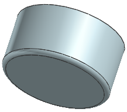

Add the edge blend

-
Click Edge Blend
 .
.
-
Click Reset
 at the top of the dialog box.
at the top of the dialog box.
-
Select the bottom edge of the cylinder.
-
In the Edge Blend dialog box, in the Radius 1 box, type 25.
-
Click OK.
